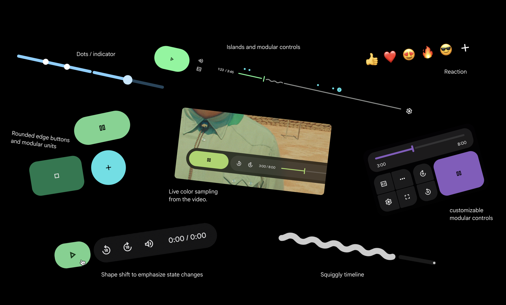
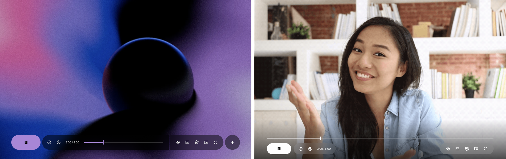
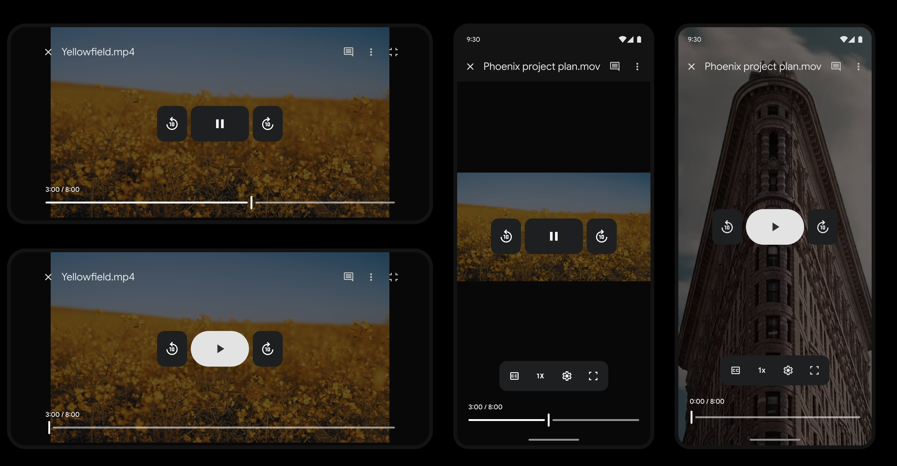

UX Lead
2 Visual Designers
1 Motion Designer
3 Interaction Designers
1 Researcher
- ~84M weekly views
- Increased modernity by 20%
- Defined a multi-year UX Video Playback Strategy to modernize the Workspace Playback experience — UI refresh was the first project
- Successfully secured buy-in from Workspace leads to prioritize a visual update ahead of other critical features
- Drove alignment across Workspace team to ensure we built a scalable system
- Defined interactions, contributed to visual design explorations, created prototypes, and delivered accessibility specifications.
Context
Google Workspace established a shared video primitive to power the experience across its products, encompassing recording, editing, sharing, and playback. As video became increasingly central to collaboration, the experience needed to feel cohesive, reliable, and scalable across products.
Editors launched Google Vids, Meet expanded asynchronous meeting capabilities, and Drive evolved its video player to support cross-product workflows. Together, this initiative aimed to make video a seamless, integrated part of the future of work.
The Workspace video playback experience was underperforming.
76% of users reported frustration.
- CSAT: 56%
- DSAT: 30%
Users cited:
- Reliability issues (buffering, processing latency)
- Poor feature discoverability
- Looking like YouTube confused users
Before

Because the player visually resembled YouTube, users expected YouTube-level functionality. However, the underlying API lacked critical features like chapters and preview scrubbing — with no near-term roadmap to close the gap.
Additionally:
- The UI was dated and misaligned with GM3 standards
- Google Vids was building a divergent player experience
I identified video playback as a high-impact, cross-Workspace pain point and successfully advocated for prioritizing a visual modernization ahead of other roadmap features. By securing leadership buy-in, I ensured dedicated resourcing and alignment to execute the update effectively.
Make video a hero journey across Workspace by delivering a unified async video experience
Design Process
My initial approach focused on establishing the framework for the new player. I defined the foundational components, building blocks, and interactions.


I organized and co-facilitated visual design brainstorm sessions to drive alignment and foster collaboration across Drive, Vids, Workspace Design Systems, and Meet.


Our team defined two directions and wanted to move forward with Direction 1.
Direction 1 — Contained timeline and controls | Direction 2 — Open timeline

As I began designing additional features, I wasn't convinced it would scale. I organized and facilitated a cross-Workspace design sprint to ensure the new design worked well with upcoming features impacting the video player:
- Chapters
- Comments
- Reactions

As we explored and evaluated these journeys during the sprint, we discovered issues with the timeline and decided to remove it from the container.
We learned that the alternative direction was better suited for upcoming features. We secured leadership buy-in to pivot direction.

Defined Principles
Uniquely Workspace
Not YouTube! GM3
Adaptable Interface
Same atoms everywhere, responsive to every device
Video first = user first
UI restructure to put video first, improved accessibility
Empower collaboration & productivity
Comments & Chapters
Refine Design
We moved forward with the open timeline and refined the visual and motion design.

Final Design
Desktop

Mobile


Outcome
- Satisfaction stays the same
- Dissatisfaction decreases by 10%
- Modernity increased 20%
- No increase in latency
What I Learned
Visual modernization can be difficult to prioritize because feature work naturally gets more attention and clearer impact. But this project reinforced how important it is to keep evolving the visual system over time so products don't gradually start to feel dated.
I also learned that visual updates don't always immediately move satisfaction metrics, which is important to set expectations with cross-functional partners and junior teammates. That said, these improvements create the foundation for future work — in our case, the modernization set the stage for new features that ultimately drove a 20% increase in satisfaction.